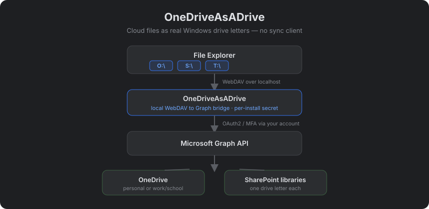

Mount OneDrive & SharePoint as real Windows drive letters
No sync client. No app registration. Modern OAuth2/MFA. Free & open source.

winget install onedriveasadrive
Or grab the Setup.exe from Releases, or run npx onedriveasadrive install.
Windows' built-in WebDAV client can't authenticate to modern Microsoft 365 accounts — basic-auth WebDAV is dead. OneDriveAsADrive runs a local WebDAV server that speaks to the Microsoft Graph API (which handles OAuth2/MFA correctly) and lets Windows map it as a normal network drive letter. It's a modern stand-in for DFS and on-prem file shares, for teams whose files already live in Microsoft 365.
OneDrive and each SharePoint library as O:\, S:\, T:\ — not a sync folder.
Drives are live views of the cloud; nothing is copied to local disk.
Signs in with your own account via the Windows broker — works where classic WebDAV fails.
One machine-wide config file, silent install, Intune/GPO friendly.
Full README · Security · Admin consent · IT deployment · Compatibility